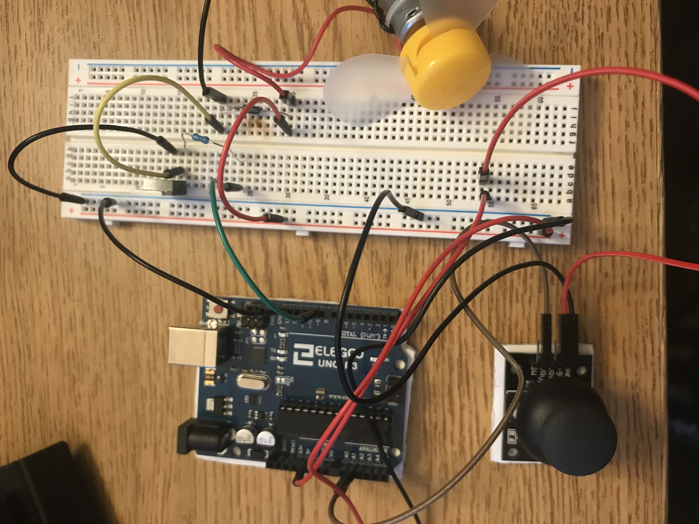

Paisley's Assignment 5!
I was really struggling with this assignment, I broke both my transistors and the library I initially chose didn't work out as well as I thought it would for this assignment. That being said, I learned a lot and I feel much more equipped going forward in this class. I also ordered more resistors.
Unfortunately, because of my struggles with this assignment, I do not have a gif to show, but here is an image of my circut.
Here is my schematic for assignment 5! The schematic shows how my circuit board should be connected.

This is my math to choose the size of resisotr I should use between the drain of the transistor and the arduino uno. Here I assumed the max current to be 30mA and the volts going through the transistor to be 60.
This is my code
// more info on Joystick library at https://www.arduino.cc/reference/en/libraries/joystick/
#include
Joystick joystick(A0, A1, 13); // library assigning A0 to x-axis, A1 to y-axis, and pin 13 to the joystick pushbutton
void setup() {
Serial.begin(9600); // initialize serial monitor
pinMode(9, OUTPUT); // initialize pin 9 as output
}
void loop() {
joystick.printY('', 0, 100); // print the Y value of joystick to serial monitor
Serial.println(); // to not next line
analogWrite(9, analogRead(A1)*0.95); // speed up or slow down the fan the certain amount
}